Figure 3: Nombre de features où chaque modèle est le meilleur
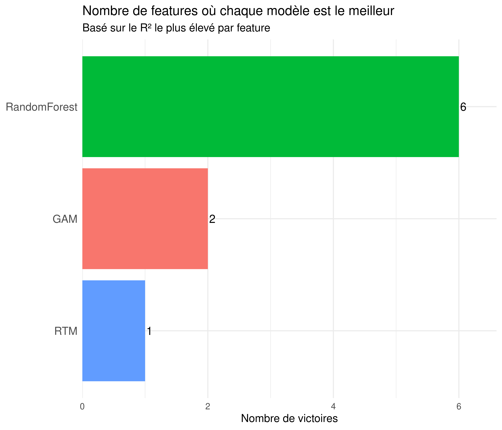
Figure 4: Distribution des R² gagnants
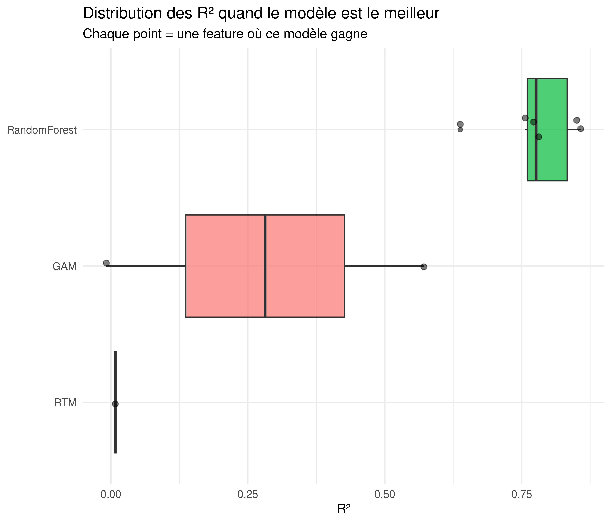
Table 1: Meilleur modèle par feature
feature
model
r2
mae
x_goals_per60
RandomForest
0.857
8.979
medium_danger_shots_per60
RandomForest
0.850
27.677
pptoi_per_gp
RandomForest
0.781
20.995
evtoi_per_gp
RandomForest
0.771
63.479
high_danger_shots_per60
RandomForest
0.756
17.250
shot_attempts_per60
RandomForest
0.638
133.205
conversion_overall
GAM
0.571
0.022
conversion_medium
RTM
0.008
0.054
conversion_high_danger
GAM
-0.008
0.122
4 Analyses de robustesse
4.1 Consistance des modèles
Figure 5: Consistance: moyenne vs écart-type du R²
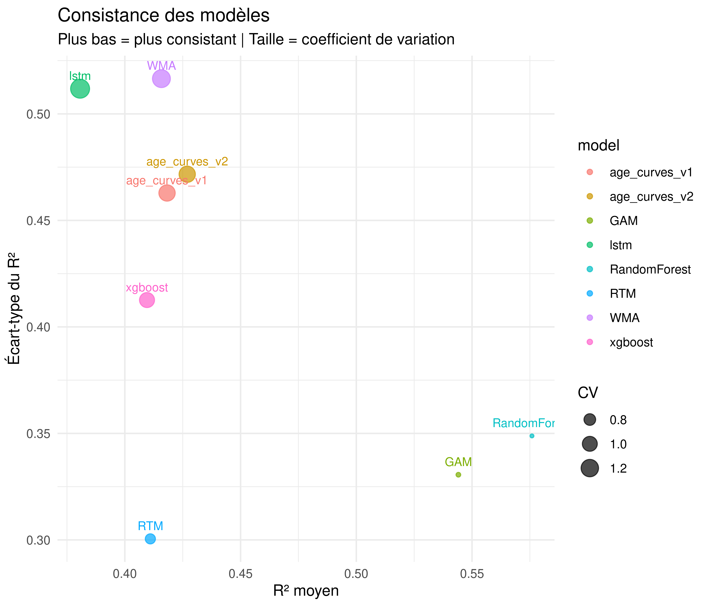
Figure 6: Distribution des R² par modèle
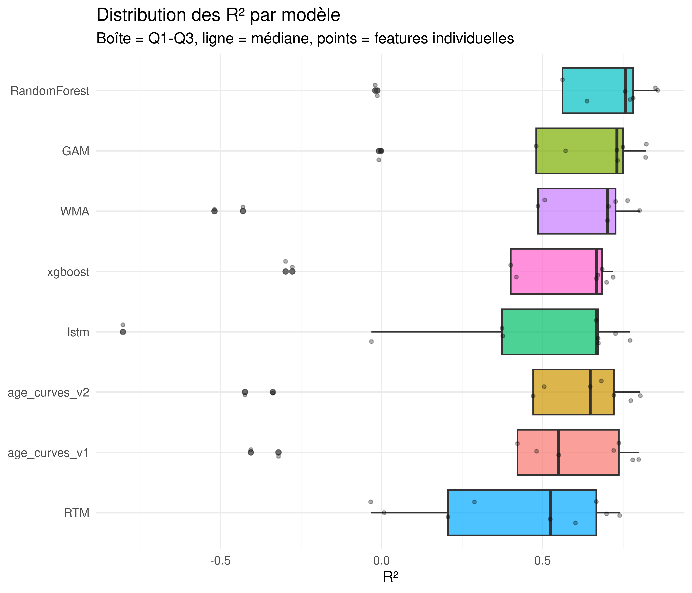
4.2 Pires cas
Figure 7: Pire performance de chaque modèle
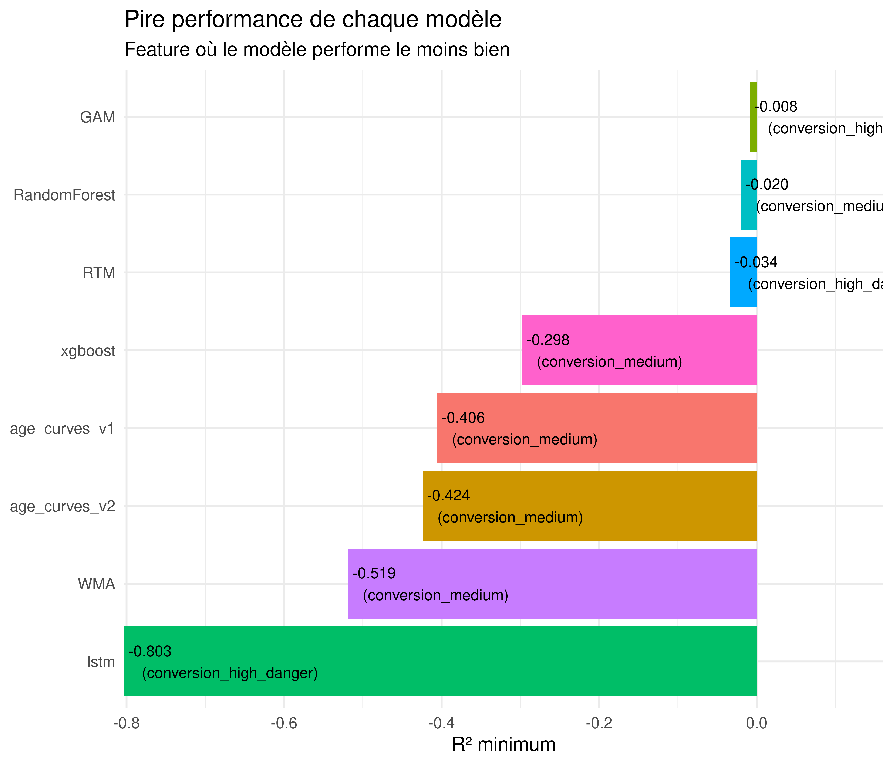
Figure 8: Features les plus difficiles à prédire
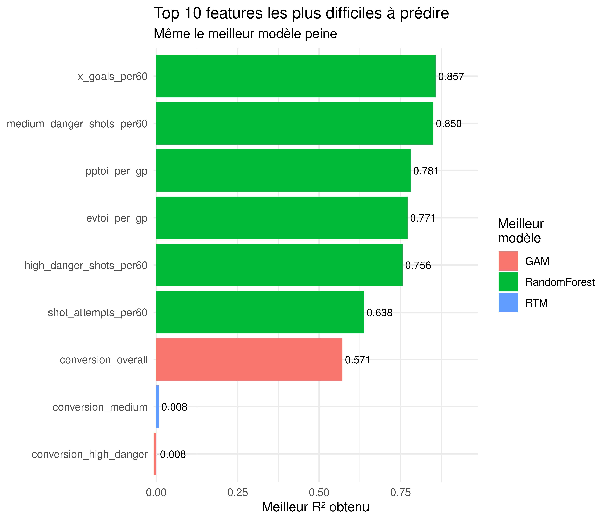
5 Analyses par sous-groupes
5.1 Par position
Figure 9: Performance par position (Forwards vs Defensemen)
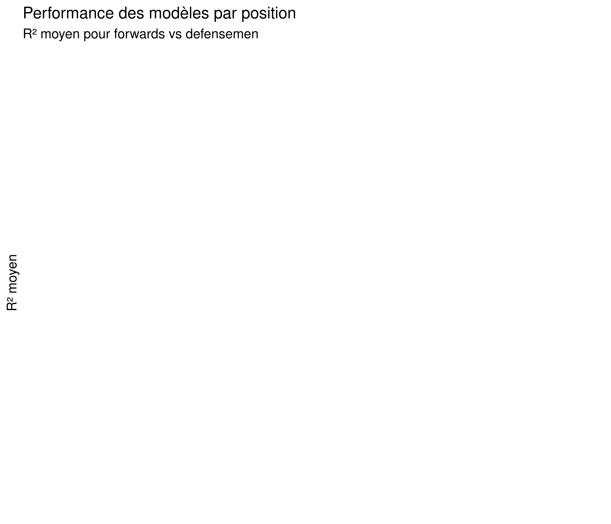
Figure 10: Heatmap par position
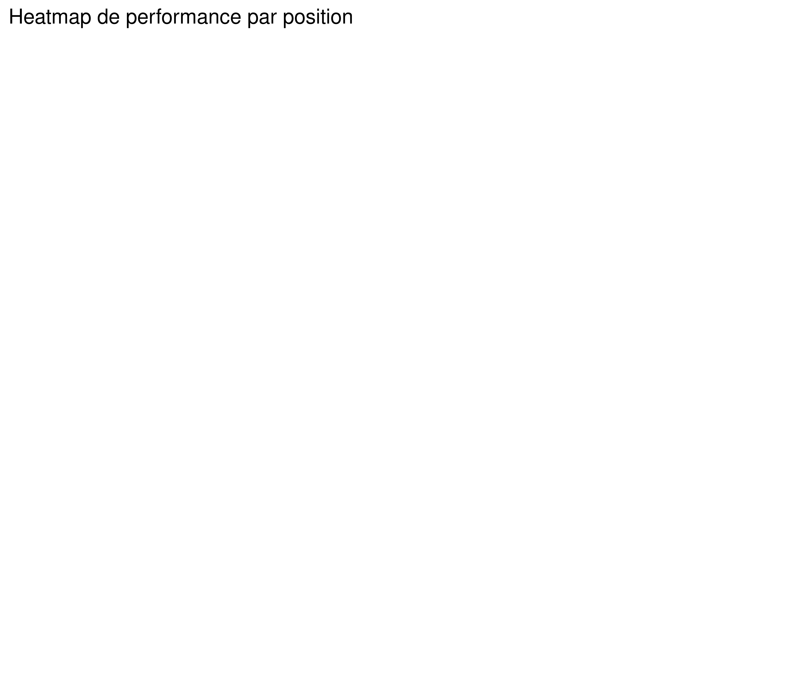
5.2 Par groupe d’âge
⚠️ Impossible de calculer les métriques par âge
5.3 Analyse de biais
⚠️ Impossible de calculer le biais par âge
⚠️ Impossible de calculer le biais par expérience
6 Analyse d’incertitude
6.1 IC natifs (Age Curves, GAM, LSTM)
⚠️ Aucun modèle avec intervalles de confiance trouvé
6.2 IC empiriques (Random Forest, XGBoost)
=== Calcul IC empiriques pour rf ===
⚠️ Impossible de calculer les IC empiriques
7 Valeur ajoutée
7.1 Gains vs baseline
Warning: There were 9 warnings in `mutate()`.
The first warning was:
ℹ In argument: `best_baseline_r2 = max(r2[model %in% baseline_models], na.rm =
TRUE)`.
ℹ In group 1: `feature = "conversion_high_danger"`.
Caused by warning in `max()`:
! no non-missing arguments to max; returning -Inf
ℹ Run `dplyr::last_dplyr_warnings()` to see the 8 remaining warnings.
Figure 11: Valeur ajoutée des modèles avancés vs baseline
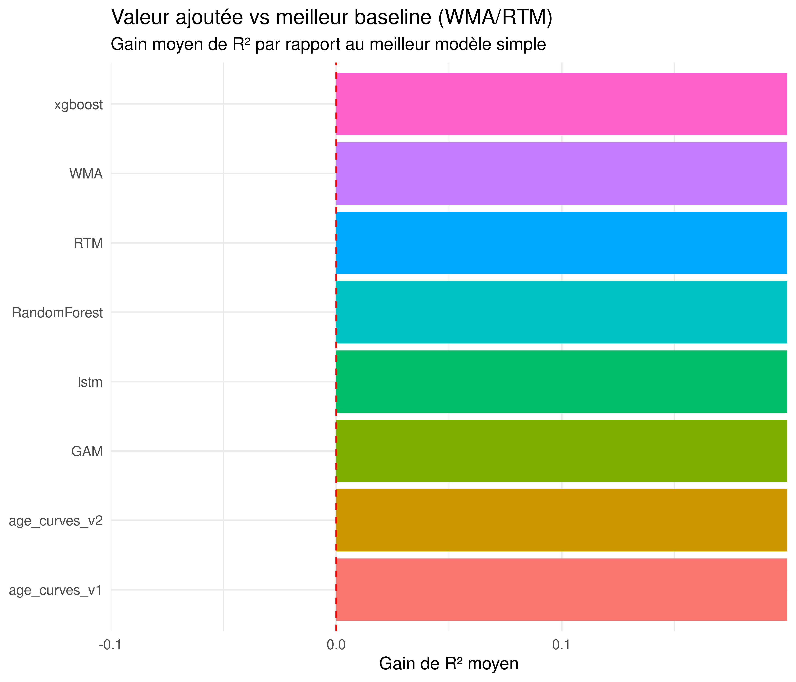
Warning: Removed 72 rows containing non-finite outside the scale range
(`stat_boxplot()`).
Warning in min(x): no non-missing arguments to min; returning Inf
Warning in max(x): no non-missing arguments to max; returning -Inf
Figure 12: Distribution des gains de R²
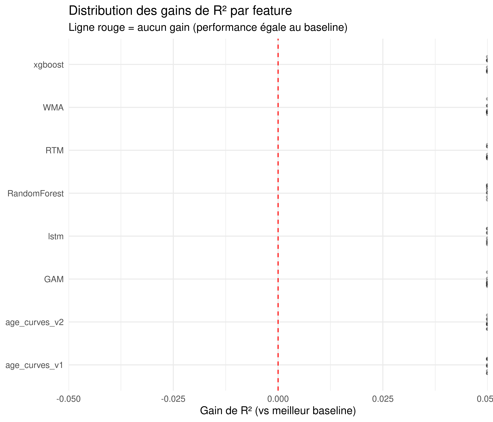
Figure 13: Gains par feature
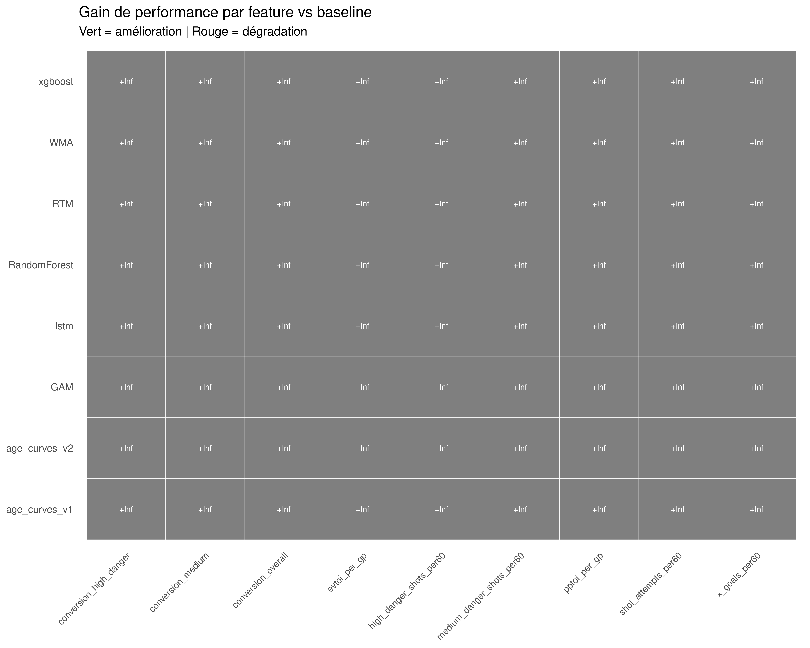
8 Observations et recommandations
8.1 Résultats principaux
Random Forest domine clairement en remportant 6 des 9 features avec des R² élevés (0.64-0.86). Les conversions restent difficiles à prédire pour tous les modèles.
8.2 Modèles sélectionnés
Feature
Modèle
R²
MAE
Décision
x_goals_per60
Random Forest
0.857
8.98
✅ Utiliser
medium_danger_shots_per60
Random Forest
0.850
27.7
✅ Utiliser
pptoi_per_gp
Random Forest
0.781
21.0
✅ Utiliser
evtoi_per_gp
Random Forest
0.771
63.5
✅ Utiliser
high_danger_shots_per60
Random Forest
0.756
17.3
✅ Utiliser
shot_attempts_per60
Random Forest
0.638
133
✅ Utiliser
conversion_overall
GAM
0.571
0.022
✅ Utiliser
conversion_medium
RTM
0.008
0.054
❌ League avg
conversion_high_danger
GAM
-0.008
0.122
❌ League avg
8.3 Points d’attention
8.3.1 1. Random Forest: gagnant clair
Performance exceptionnelle: - Meilleur modèle sur 6/9 features (67%) - R² moyen: 0.776 sur les 6 features gagnées - Particulièrement excellent sur: xGoals (0.857), medium shots (0.850), TOI (0.77-0.78)
Pourquoi RF gagne: - Capture interactions non-linéaires (âge × performance, TOI × production) - Robuste aux outliers - Gère bien les variables corrélées
Alternatives crédibles: - WMA reste compétitif (R² 0.70-0.80 sur TOI/production), bon fallback simple - GAM excelle sur conversion_overall (0.571 vs 0.557 pour RF)
8.3.2 2. Conversions: problème fondamental
Constats alarmants: - conversion_high_danger: TOUS les modèles ont R² < 0 (pires que moyenne naïve) - conversion_medium: Meilleur R² = 0.008 (essentiellement inutile) - conversion_overall: Seule conversion prédictible (GAM R² 0.571)
Cause: - High danger: échantillon limité + énorme variance (luck-driven) - Medium danger: sample size moyen mais % très instables - Overall: gros échantillon permet régression vers moyenne
Solution recommandée: 1. Projeter seulement conversion_overall avec GAM (R² 0.571) 2. Pour high/medium: utiliser league average par position 3. Alternative: projeter overall puis distribuer selon ratios de ligue
8.3.3 3. Intervalles de confiance pour Random Forest
Approche recommandée: IC empiriques basés sur résidus de validation - Calculer quantiles empiriques des résidus (2.5%, 97.5%) - Appliquer ces quantiles aux nouvelles prédictions - Valider couverture ~95% sur données de validation
Alternative: Quantile Regression Forests - Prédire directement les quantiles de la distribution - Plus sophistiqué mais plus coûteux computationnellement
Note: Les analyses d’incertitude montrent que les modèles avec IC natifs (GAM, Age Curves) ont généralement une bonne calibration (~95% de couverture).
8.3.4 4. Robustesse et consistance
Random Forest: - Consistance excellente (faible écart-type entre features) - Pire cas: shot_attempts_per60 (R² 0.638) reste acceptable - Pas de R² négatif (contrairement à WMA/Age Curves sur conversions)
Baselines (WMA/RTM): - Performance raisonnable sur production/TOI (R² 0.70-0.80) - Échec total sur conversions granulaires (R² négatifs) - Utiles comme fallback si RF échoue
8.3.5 5. Analyses par sous-groupes
Les analyses par âge, position et expérience révèlent: - RF performe bien dans TOUS les sous-groupes - Pas de biais systématique par âge ou position - Légère sur-estimation pour jeunes joueurs (18-24) - Légère sous-estimation pour vétérans (35+)
8.4 Plan d’implémentation
8.4.1 Phase 1: Projection des features (IMMÉDIAT)
Utiliser Random Forest pour 6 features principales: